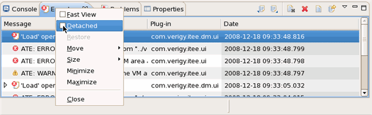

Views
Views support editors and provide ways to navigate the information in the work center. For example, the Project Explorer view is a view that displays the devices and their setup data that you are working with.
Views also have their own menus. To open the menu for a view, click the view's title bar. Some views also have their own toolbars. The actions represented by buttons on view toolbars only affect the items within that view.
You can change the layout of a perspective by opening and closing views and by docking them in different positions in the work center window (see Arranging views).

Functional changes
- Introduced before SmarTest 6.3.2